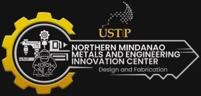

USTP-CDO Design Engineering and Fabrication Laboratory (FabLab)
University of Science and Technology of Southern Philippines (USTP) · Region X
The USTP Design Engineering & Fabrication Laboratory (USTP FabLab) is the digital fabrication center of the University of Science and Technology of Southern Philippines, located at C.M. Recto Avenue, Lapasan, Cagayan de Oro City. As a member of the global Fab Lab network, USTP FabLab provides open access to state-of-the-art prototyping and design-engineering equipment for students, faculty, researchers, and MSMEs in Region X.
- Category
- Fabrication Laboratory (FabLab)
- Host institution
- University of Science and Technology of Southern Philippines (USTP)
- City
- Cagayan de Oro City
- Region
- Region X
- Operating status
- Operating
About the Center
USTP is a premier public science and technology university serving Mindanao, with campuses across Northern Mindanao and the Caraga region. The USTP FabLab reflects the university's commitment to applied research and innovation, offering a collaborative space where ideas are transformed into physical prototypes. The center maintains an active Facebook page (facebook.com/ustpfablab) and an online portal (ustpfablab.weebly.com) where clients can learn about services and equipment availability.
Programs & Services
- 3D Printing — Rapid prototyping of engineering models, product concepts, and replacement parts
- Laser Cutting & Engraving — Precision processing of acrylic, wood, cardboard, and fabric for design and product applications
- CNC Routing & Milling — Subtractive manufacturing for wood, foam, and soft metals using CNC equipment
- Electronics & Embedded Systems — Support for Arduino/microcontroller-based product prototypes and IoT device development
- Design Engineering Consultation — Guidance on product design, engineering drawing, and design-for-manufacture for student and MSME projects
- Training Programs — Capacity-building workshops on digital fabrication, CAD/CAM software, and design-thinking methodologies
- MSME Prototyping Assistance — End-to-end support for Northern Mindanao entrepreneurs seeking to develop or improve product prototypes for commercialization
Contact
Sources & references
- dtiwebfiles.s3.ap-southeast-1.amazonaws.com/BSMED/MED/FabLabsBrochure-15Sep…
- facebook.com/ustpfablab
- ustpfablab.weebly.com
Details are drawn from public records and the sources above, July 2026.
Startupreneur Innovation Hub · synced from the Notion catalog (July 2026) · status: published.